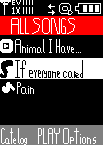

VCast has you covered on songs. Choose a song, download it, and then... To play it, please get your LG Phone ready for this!
Choose the "Get It Now Tab".
Choose "My Music".
Choose an option "1-6". (May I reccomend No. 1, whick is All Music.)

When you select your song name, the player will begin playing the song.
Push the "Red Phone Button". The song will keep playing, and will come up at the top of the screen.
What's The Difference Between The Two Players?
The VCast Player shows Cover Art and even, fast forwarding and a cool menu accessed by pushing Up.